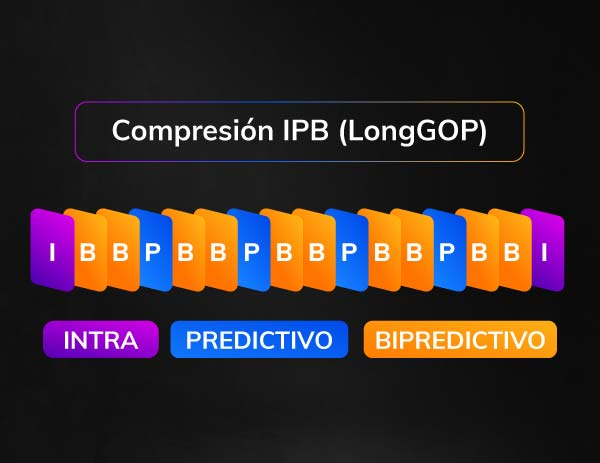
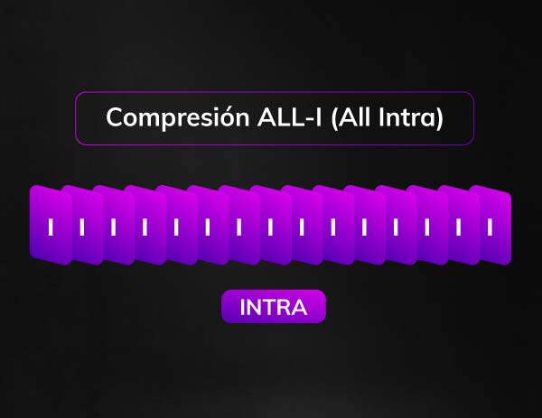
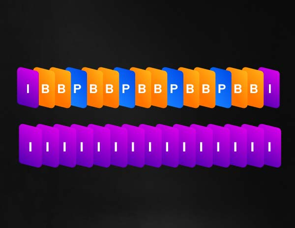
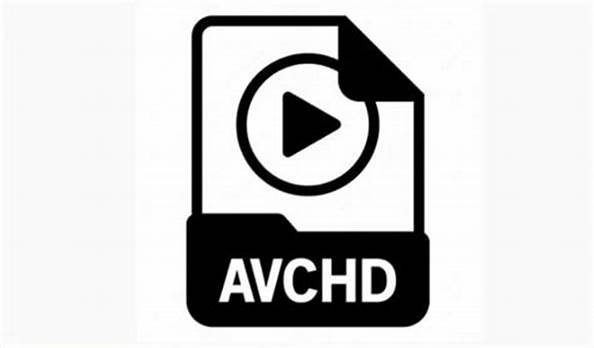

5.2.CRT.
Definición.
La compresión de vídeo se refiere al proceso de reducir el número total de bits necesarios para representar una determinada secuencia de vídeo o imagen. Lo más habitual es que se ejecute mediante la fórmula o algoritmo de un programa que calcula la mejor manera de reducir adecuadamente el tamaño de los datos. La reducción de datos que resulta de la compresión conlleva ventajas como menores requisitos de ancho de banda y menores requisitos de almacenamiento para un clip de contenido de vídeo.
La compresión de vídeo suele implicar la omisión de información que no se considera absolutamente necesaria para la visualización de un clip de contenido de vídeo. Un códec de compresión eficaz hará que los archivos de vídeo sean más pequeños y manejables sin sacrificar la calidad de las imágenes mostradas. Además, para comprimir grandes cantidades de vídeo no se necesitarán grandes costes de hardware y gastos generales. Por regla general, cuanto más agresiva sea la compresión, mayor será el ahorro en ancho de banda de transmisión y espacio de almacenamiento. Sin embargo, esto se hace a expensas de la calidad del vídeo.
Para que sirve.
La compresión de vídeo es esencial a la hora de grabar y, a su vez, guardar cualquier tipo de vídeo de vigilancia o seguridad, ya que la compresión cambia los archivos a un formato más pequeño. Esto maximiza el espacio de hardware y permite guardar más vídeos en un determinado disco duro o dispositivo de almacenamiento. Además, la compresión de vídeo permite a los usuarios almacenar vídeos más largos y de mayor calidad en sus discos duros, ya que estos vídeos consumirían memoria rápidamente si no se comprimieran.
Como funciona.
Hay dos formas principales de comprimir los datos de un clip de vídeo: la compresión entre fotogramas y la compresión intrafotograma. La compresión intrafotograma toma cada fotograma individual del vídeo y comprime los archivos de forma similar a como se utiliza JPEG para comprimir una imagen fija. Por el contrario, la compresión entre fotogramas comprime ligeramente la imagen y garantiza que cada fotograma esté completo.
Tipos de compresion.
- Compresiones en RAW
- Compressed (Lossy Compressed) – Compresión con pérdida. Hay una clara pérdida de calidad al comprimir.
- Lossless compressed – Compresión sin pérdida. Es decir, no hay pérdida de calidad percibida al comprimir.
- Uncompressed – Sin comprimir.
Todas las cámaras tienen cierta parte de compresión, aunque sea en RAW, pero depende mucho de la cámara. Por ejemplo, las RED cuentan con mucha más compresión. Por otro lado, en Blackmagic encontramos Blackmagic RAW, con diferentes tasas de compresión como 3:1, 5:1, 8:1 y 12:1. La tasa de 3:1, al estar más cerca de 1:1, casi no tendría compresión. Cuanto más vayamos hacia 12:1, más compresión habrá. Con esto quiero que sepas que RAW si puede ser comprimido y, de hecho, es comprimido en la gran mayoría de situaciones.

- Compresión IPB – LongGOP
Entre los tipos de compresión más típicos destaca la compresión IPB (LongGOP – Long Group of Pictures). Se trata de una compresión muy eficiente y se utiliza en infinidad de cámaras y dispositivos.
Este tipo de compresión está muy bien para entrega, pero para grabación y edición no tanto, por la pérdida de información y por todo lo que va a exigir a tu equipo de edición al leer fotogramas. En cámara, verás que se muestra normalmente como LongGOP (Long Group of Pictures). - Compresión ALL-I
Por otro lado, la compresión ALL-I (All Intra), también está presente en muchas cámaras como la sony A7SIII o las Panasonic.
En este caso, todos los fotogramas son Intra y se leen por completo cada vez. Esto supone que habrá mejor imagen percibida, porque hay mucha más información cuando hay muchos cambios en la imagen.
En la edición, al ordenador le costará mucho menos leer los fotogramas. Pero que sepas que si no estamos comprimiendo tanto, entonces habrá más peso en los archivos resultantes. - Compresión Interframe vs. Intraframe
En vídeo, hay ciertos códecs que utilizan una compresión y otros, que utilizan otra. Por ejemplo, el códec antiguo H262 utilizaba compresión LongGOP (interframe). Sin embargo, H264 y H265 pueden utilizar ambos tipos de compresión, tanto LongGOP como ALL-I. De ahí que haya cámaras actualmente, como la Sony A7SIII, que permiten escoger entre H264 y H265, y luego también LongGOP o ALL-I.
A su vez, hay otros formatos de vídeo como ProRes, DNx o M-JPEG, que utilizan siempre la compresión ALL-I (intraframe), lo que hace que sean más adecuados para edición.



5.3.VIDEO DIGITAL.
Definición.
El vídeo digital convierte la imagen real captada por la cámara en lenguaje binario de 1 y 0. La señal eléctrica que recibe la cámara ya no es plasmada en un soporte electromagnético. En vídeo digital la información en sistema de bits se puede almacenar en discos duros o en soportes digitales.
El vídeo digital es un tipo de señal de vídeo que se transmite y almacena utilizando métodos digitales en lugar de analógicos. A menudo se utiliza en referencia a las señales de televisión de alta definición (HDTV), que son de mayor calidad que las señales de televisión analógicas tradicionales.
El vídeo digital puede almacenarse en un ordenador u otro dispositivo digital y transmitirse por Internet u otras redes digitales. También es posible convertir las señales de vídeo analógicas a formato digital, o viceversa.
Calidad de imagen.
Cada imagen del vídeo digital está compuesta de un número concreto de pixeles. Los pixeles serán, por tanto, la unidad mínima y determinarán la calidad de la imagen digital. Éstos tendrán la información del color y de la disposición de la imagen según su codificación en sistema binario.
La resolución de la imagen del vídeo digital se mide en pixeles por pulgada o dpi (dots per inch). A mayor resolución mayor calidad de imagen.
Los dispositivos de captura han reducido su tamaño considerablemente en comparación con las cámaras analógicas. La calidad del dispositivo digitalizador resulta primordial para obtener una imagen óptima.
Bitrate.
El bitrate o flujo de datos es la cantidad de información por segundo transmitida por una imagen digital. Ésta imagen será de mayor calidad cuanto mayor sea su bitrate.
El vídeo digital no pierde calidad en función del número de reproducciones. Los soportes son más pequeños y manejables que los analógicos por lo que su almacenaje es más fácil
5.4.VENTAJAS.
El vídeo digital ofrece una serie de ventajas sobre el vídeo analógico tradicional, entre ellas
- Mayor resolución: El vídeo digital ofrece una resolución significativamente mayor que el vídeo analógico, por lo que es ideal para aplicaciones que requieren imágenes de alta calidad.
- Mayor flexibilidad:El vídeo digital es mucho más flexible que el vídeo analógico, por lo que es más fácil de editar y manipular.
- Compresión mejorada:Las técnicas de compresión de vídeo digital son mucho más eficientes que sus contrapartes analógicas, lo que resulta en tamaños de archivo más pequeños y una mejor calidad de imagen.
- Interactividad mejorada: El vídeo digital es intrínsecamente más interactivo que el vídeo analógico, por lo que es ideal para aplicaciones como las videoconferencias y el software educativo.
- Mayor compatibilidad:El vídeo digital es compatible con una amplia gama de dispositivos y soportes, como ordenadores, reproductores de DVD y televisores digitales.
5.5.TELEVISION HD.

Definicion.
La Televisión de Alta Definición (TVAD) representa una recepción avanzada de Televisión Digital en cuanto a calidad de la imagen se refiere, proporcionando imágenes excepcionalmente detalladas y nítidas, con una increíble riqueza de colores.
La TVAD combina el formato panorámico con la alta resolución y, por consiguiente, es la siguiente mejora de la televisión después de la pantalla panorámica.
La característica técnica principal de la TVAD es que ofrece entre cuatro y cinco veces la resolución de un sistema de televisión de definición estándar.
Historia.
Anteriormente el término se aplicaba a los estándares de televisión desarrollados en la década de 1930 para reemplazar a los modelos de prueba. También se usó para referirse a modelos anteriores de alta definición, particularmente en Europa, llamados D2 Mac, y HD Mac, pero que no pudieron implantarse ampliamente.
Los términos en inglés HD ready ("listo para alta definición", en español) y compatible HD ("compatible con alta definición") se están usando con propósitos publicitarios. Indican que el dispositivo electrónico que lo posee, ya sea un televisor o un proyector de imágenes, es capaz de reproducir señales en alta definición; aunque el hecho de que sea compatible con contenidos en esta norma no implica que el dispositivo sea de alta definición o que tenga la resolución necesaria, tal y como pasa con algunos televisores basados en tecnología de plasma con menos definición vertical que televisores de años atrás (833x480, en vez de los 720x576 píxeles - anamórficos equivalen a 940x576-), los cuales son compatibles con señales en alta definición porque reducen la resolución de la imagen para adaptarse a la resolución real de la pantalla.
Sistemas actuales.
ATSC:Fue diseñado para agregar un transmisor digital a cada transmisor NTSC sin interferencias entre las señales. Desarrollado y utilizado en Estados Unidos y adoptado o en uso en Corea del Sur, Canadá, México, y República Dominicana, entre otros, con capacidad para transmitir en HD.
DVB:Es una familia de normas de televisión, consta de diferentes versiones; DVB-T/S/C (Terrestre/Satélite/Cable) es un sistema de televisión digital, creado tomando como base la versión en baja definición del sistema de alta definición analógica HD MAC, llamado (D2 MAC). Su desarrollo se debió al fracaso de la alta definición analógica (requería 36MHz de ancho de banda).
ISDB-T:Es una norma desarrollada en Japón que posee flexibilidad, puesto que se puede usar con anchos de banda para señal de 6, 7 y 8 MHz adaptándose fácilmente a cualquier parte del mundo. Es compatible con las normas analógicas NTSC y PAL. Puede enviar señales de audio e imagen de calidad superior (FULL HDTV y sonido de audio con calidad CD o 5.1) y multiplexar hasta 4 canales de definición estándar y así optimizar el espectro radioeléctrico.
Ventajas.
Las ventajas de la TVAD se pueden apreciar en su totalidad en las pantallas de gran formato. El efecto combinado del formato panorámico y de la mayor resolución es ampliar el ángulo de visión desde 10 grados para la televisión de definición estándar hasta aproximadamente 32 grados.
Esto transforma la televisión de una experiencia de visión objetiva – mirar a una pantalla pequeña – a una experiencia de visión subjetiva , es decir el ojo se pasea dentro de la imagen por diferentes elementos. Esto mejora de manera importante el realismo y el impacto y, por consiguiente, el disfrute de la obra.
La TVAD acerca un paso más la experiencia de la visión en casa al cine en términos técnicos y de visión. El deporte, los documentales y los grandes conciertos adquieren una nueva dimensión en el hogar gracias a la TVAD.
5.6.FORMATOS DE VIDEO.
- MP4
El formato de vídeo digital más común, MP4, ofrece tamaños de archivo relativamente pequeños para vídeos de alta calidad. El formato también ofrece una amplia compatibilidad, ya que es el formato de vídeo estándar en Internet y la televisión. Supongamos que vas a publicar en plataformas de redes sociales o en YouTube. En ese caso, generalmente no puedes equivocarte con MP4, pero recuerda que estos vídeos pueden sobrecargar los recursos de tu ordenador y a veces son difíciles de editar. - AVI
Si se trata de clasificar los tipos de formatos de vídeo en función de su calidad, es probable que AVI encabece la lista. Este formato de vídeo existe desde hace casi 30 años. Muy pocas opciones se le pueden comparar en cuanto a calidad de audio y vídeo.
Sin embargo, esa calidad se consigue a costa de archivos de gran tamaño, lo que hace que el formato no sea el ideal para publicar en sitios de streaming. Además, AVI no puede generar subtítulos, por lo que puede resultar inutilizable en función de los vídeos que crees y del público al que te dirijas - MKV
MKV es otro formato de archivo de vídeo que ofrece una calidad superior de audio y vídeo con la advertencia de un gran tamaño de archivo, muy parecido al formato de archivo AVI. Sin embargo, algo que distingue al formato MKV de los demás es que ofrece la posibilidad de llevar más de un códec al mismo tiempo. A diferencia de los archivos AVI, los archivos MKV pueden tener subtítulos, que es una de las muchas razones por las que el formato está creciendo en popularidad. - MOV
Apple creó el formato de vídeo MOV específicamente para su hardware y software. Con los años, se ha convertido en el formato de archivo preferido para la edición de vídeo. Un vídeo MOV puede separarse fácilmente para su edición sin dejar de ofrecer una calidad excelente. El mayor inconveniente del formato es que no todos los dispositivos pueden reproducir archivos MOV. - WebM
Google diseñó el formato de archivo de vídeo WebM específicamente para los navegadores de Internet, y presume de un nivel de calidad impresionantemente alto, teniendo en cuenta su diminuto tamaño de archivo. Aunque eso puede ser una gran cosa en los navegadores con los que el formato es compatible, WebM no es compatible con todos los navegadores. Esto puede resultar problemático si quieres que tu vídeo llegue a un público lo más amplio posible. - WMV
Desarrollado inicialmente por Microsoft como continuación del formato AVI, WMV puede reproducirse ahora en cualquier dispositivo compatible con el Reproductor de Windows Media. El formato WMV destaca por su increíble compresión, alta calidad de vídeo y reducido tamaño de archivo, pero, por desgracia, sigue sin ser compatible con otros reproductores de vídeo. - AVCHD
Este formato de archivo de vídeo se diseñó inicialmente para grabar vídeo con videocámaras Sony y Panasonic. Ofrece compresión sin pérdidas con archivos de tamaño minúsculo, audio y vídeo de calidad superior y mucha más información en cada archivo. Puede parecer un sueño hecho realidad, pero hay un problema. El formato sólo funciona en productos Sony, como ya se ha mencionado, y Panasonic.


